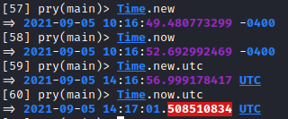
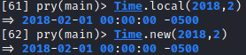
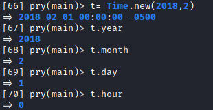
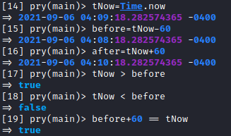

Time
Time
(
https://ruby-doc.org/core-3.0.0/Time.html)
•
Create Time instances, using different ways and time zone
> Time.new
> Time.now
> Time.new.utc
> Time.now.utc
• Create specific Time
objects
Time.local is a synonymous for Time.new
Anyway is suggested to use Time.local for readability
and understandability.
> Time.local(2018,2)
> Time.new(2018,2)
• Methods
for more
see
https://ruby-doc.org/core-3.0.0/Time.html Comparable
moduleHow we can see from the docs of ruby(
https://ruby-doc.org/core-3.0.0/Time.html), the Comparable
module is included in the Time class.
This means that you can use basic comparison operators such as
<,>,==,>=,<=, ...
